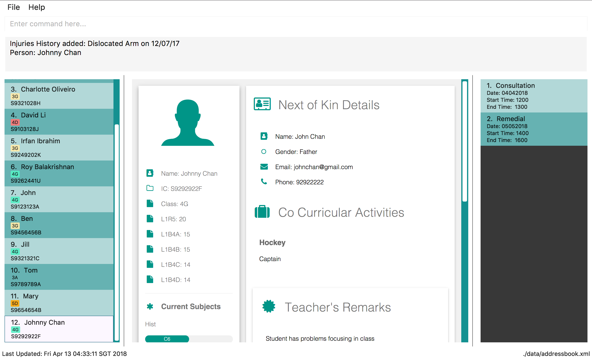

By: CS2103JAN2018-T09-B1 Since: Mar 2018 Licence: MIT
- 1. Introduction
- 2. Quick Start
- 3. Features
- 3.1. Viewing help :
help - 3.2. Adding a student:
addora - 3.3. Listing all students :
listorl - 3.4. Sorting all students :
sort[since v1.2] - 3.5. Editing a student :
editore - 3.6. Adding subjects to a student :
addsub[since v1.5] - 3.7. Finding students by name:
findorf - 3.8. Deleting a student :
deleteord - 3.9. Deleting a tag :
tagdeleteortd[since v1.1] - 3.10. Replacing a tag :
tagreplaceortr[since v1.2] - 3.11. Adding a remark :
addremark[since v1.4] - 3.12. Deleting a remark :
deleteremark[since v1.4] - 3.13. Selecting a person :
selectors - 3.14. Listing entered commands :
historyorh - 3.15. Undoing previous command :
undooru - 3.16. Redoing the previously undone command :
redoorr - 3.17. Creating an appointment:
addappointmentoraddappt[since v1.4] - 3.18. Deleting an appointment:
deleteappointmentordeleteappt[since v1.5] - 3.19. Displaying calendar view:
view[since v1.5] - 3.20. Viewing streaming score:
stream[since v1.5] - 3.21. Adding a injury history to a student :
addinjuries[since v1.5] - 3.22. Deleting a injuries history from a student :
deleteinjuries[since v1.5] - 3.23. Editing the details of CCA of a student :
cca[since v1.5] - 3.24. Editing the details of the next of kin of a student :
nok[since v1.5] - 3.25. Changing theme of EduBuddy :
theme[since v1.5] - 3.26. Clearing all entries :
clearorc - 3.27. Saving the data
- 3.28. Exiting the program :
exit - 3.29. L.E.A.P.S System
[coming in v2.0] - 3.30. Encrypting data files
[coming in v2.0]
- 3.1. Viewing help :
- 4. FAQ
- 5. Command Summary
1. Introduction
EduBuddy is a desktop application designed for secondary school teachers to store and manage student records. More importantly, EduBuddy is optimized for those who prefer to work with a Command Line Interface(CLI) while still having the benefits of a Graphical User Interface (GUI). If you can type fast, EduBuddy can get your student profile management tasks done faster than traditional GUI apps. Interested? Proceed on to Section 2, “Quick Start” to get started. Enjoy!
2. Quick Start
Not quite sure how to get started? This section helps to guide you through the necessary steps to get EduBuddy up and running.
-
Ensure you have Java version
1.8.0_60or later installed in your Computer.Having any Java 8 version is not enough.
This app will not work with earlier versions of Java 8. -
Download the latest
EduBuddy.jarhere. -
Copy the downloaded jar file to the folder you want to use as the home folder for EduBuddy.
-
Double-click the file to start the app. The GUI should appear in a few seconds.
A EduBuddy folder will be created in your operating system’s home directory to facilitate debugging for advanced users.
At this point, EduBuddy should be successfully set up. Here are some example commands that you can try:
-
listorl: lists all students -
sortname: sorts the list of students by name -
deleteord3: deletes the 3rd student shown in the current list -
exit: exits the app
|
-Type the command in the command box and press Enter to execute it. e.g. typing help and pressing Enter will open the help window.-Refer to Section 3, “Features” for details of each command. |
3. Features
This section provides the information of all the useful and interesting features that EduBuddy has to offer.
Here are the guidelines that you may wish to follow when typing in commands.
Command Format
-
Words in
UPPER_CASEare the parameters to be supplied by the user e.g. inadd n/NAME,NAMEis a parameter which can be used asadd n/John Doe. -
Parameters can be in any order e.g. if the command specifies
n/NAME ic/S9500186H,ic/S9500186H n/NAMEis also acceptable. -
Items in square brackets are optional. e.g
n/NAME [t/CLASS]can be used asn/John Doe t/1Aor asn/John Doe. -
Command input is case insensitive, e.g
fInD Alexandfind Alexworks the same.
3.1. Viewing help : help
If you are unsure about the features of the EduBuddy, or require any technical assistance, type help and you will be shown with the help page.
Format: help
return to Table of Contents
3.2. Adding a student: add or a
When students are enrolled in the Secondary School you are teaching and you want to keep track of their information,
this feature allows you to add a student and his/her details to EduBuddy.
Format: add n/NAME ic/NRIC [t/CLASS] [r/REMARK] [sub/SUBJECT_NAME SUBJECT_GRADE …]
Abbreviation Format: a n/NAME ic/NRIC [t/CLASS] [r/REMARK] [sub/SUBJECT_NAME SUBJECT_GRADE …]
|
-For more examples on what subjects and subject grades can be added, please refer to the Section 4, “FAQ” section below. -If you want to change the students' details later, you can use the Edit feature at Section 3.5, “Editing a student : edit or e”.-If you want to add additional subjects later, you can use the the AddSubject feature at Section 3.6, “Adding subjects to a student : addsub [since v1.5]”
|
-When adding a student, at least a NAME and a NRIC should be provided.-A SPACE should be inserted between each SUBJECT_NAME and SUBJECT_GRADE.
|
Examples:
-
add n/John Doe ic/S9500186H t/1A r/English Rep sub/English B3 EMath A2 Chinese A1 Phy A1 AMath A1 Hist A2 -
add n/Betsy Crowe ic/S9511111I -
a n/John Doe ic/S9500186H t/1A r/English Rep sub/English B3 EMath A2 Chinese A1 Phy A1 AMath A1 Hist A2 -
a n/Betsy Crowe ic/S9511111I
return to Table of Contents
3.3. Listing all students : list or l
After you have used the find feature in Section 3.7, “Finding students by name: find or f”, the list only shows the filtered students' list.
Therefore you want to be able to view the list of all the students again.
You can just follow the format below and you will be able to see the full list.
Format: list
Abbreviation Format: l
return to Table of Contents
3.4. Sorting all students : sort [since v1.2]
Having trouble finding the student contact in the never ending list?
Fret not, as this feature helps you to sort the list of all students in EduBuddy according to different parameters.
Format: sort PARAMETER
| List of available PARAMETER: name, tag |
Examples:
-
sort name
Sorts the list of students by name in alphabetical order (case insensitive). -
sort tag
Sorts the list of students by tag in alphabetical and numerical order (case insensitive)
return to Table of Contents
3.5. Editing a student : edit or e
When you forgot to add in some details regarding the student, or the student has updated his/her information,
you can use this feature to edit an existing student in EduBuddy.The existing fields will then be updated accordingly.
Format: edit INDEX [n/NAME] [ic/NRIC] [t/CLASS] [t/CLASS_REGISTER] [sub/SUBJECT_NAME SUBJECT_GRADE …]
Abbreviation Format: e INDEX [n/NAME] [ic/NRIC] [t/CLASS] [t/CLASS_REGISTER] [sub/SUBJECT_NAME SUBJECT_GRADE …]
Edits the student at the specified INDEX. The index refers to the index number shown in the last student listing. |
|
-At least one of the optional fields must be provided. - INDEX must be a positive integer: 1, 2, 3, …-When editing the fields, for example: subjects, the previous information will be overwritten by the new subjects. |
Examples:
-
edit 1 ic/S9123456A
Edits the NRIC number of the 1st student to beS9123456A. -
edit 2 n/Betsy Crower sub/English A1 Chinese A1
Edits the name and subjects of the 2nd student to beBetsy Crower. -
e 1 ic/S9123456A
Edits the NRIC number of the 1st student to beS9123456A. -
e 2 n/Betsy Crower sub/English A1 Chinese A1
Edits the name and subjects of the 2nd student to beBetsy Crower.
return to Table of Contents
3.6. Adding subjects to a student : addsub [since v1.5]
If you forgot to add a subject/some subjects to a student earlier and do not want to retype all the subjects using Section 3.5, “Editing a student : edit or e”,
you can use this feature to save your troubles.
You just need to follow the format below and replace the words in "[ ]" with the corresponding subject(s) details.
Format: addsub INDEX sub/[SUBJECT_NAME SUBJECT_GRADE …]
-Adds subject(s) the student at the specified INDEX. The index refers to the index number shown in the last student listing.-If you want to view the subjects of the student, please refer to Section 3.13, “Selecting a person : select or s”-This feature is undoable, so if you need to restore the EduBuddy to the state before you enter this command, type in undo.
|
-INDEX must be a positive integer: 1, 2, 3, …-There should be a SPACE between each SUBJECT_NAME and SUBJECT_GRADE.-If the student is already assigned to the subject that you want to add, that subject will not be overwritten. -If you have typed in duplicate subjects, for example, addsub 1 sub/English A1 English A1, the system will return an error message.
You can remove the duplicate subject (addsub 1 sub/English A1) and press Enter to add the subject(s).
|
Examples:
-
addsub 1 sub/English A2
Adds a new subjectEnglish A2to the student atINDEX1. -
addsub 11 sub/Hist A1 EMath A1
Adds subjectsHist A1andEMath A1to the student atINDEX11.


return to Table of Contents
3.7. Finding students by name: find or f
Finds a list of students whose name contains any of the given keywords.
Format: find KEYWORD [MORE_KEYWORDS]
Abbreviation Format: f KEYWORD [MORE_KEYWORDS]
-The search is case insensitive. e.g hans will match Hans.-The order of the keywords does not matter. e.g. Hans Bo will match Bo Hans.-Students matching at least one keyword will be returned (i.e. OR search). e.g. Hans Bo will return Hans Gruber, Bo Yang.
|
Only the name is searched and only exact words will be matched e.g. Han will not match Hans.
|
Examples:
-
find Johnorf John
ReturnsjohnandJohn Doe -
find Betsy Tim Johnorf Betsy Tim John
Returns any student having namesBetsy,Tim, orJohn
return to Table of Contents
3.8. Deleting a student : delete or d
If the student is not taught by you anymore, and you do not need to keep track of his/her information,
you can remove the student’s details from EduBuddy using this feature.
Format: delete INDEX
Abbreviation Format: d INDEX
-Deletes the student at the specified INDEX.-The index refers to the index number shown in the most recent student listing. |
INDEX must be a positive integer: 1, 2, 3, …
|
Examples:
-
list
d 2
Deletes the 2nd student in EduBuddy. -
find Betsy
delete 1
Deletes the 1st student in the results of thefindcommand.
return to Table of Contents
3.9. Deleting a tag : tagdelete or td [since v1.1]
When you have added the wrong Class tag,
or when the secondary 4 students have moved to the next higher education level,
and you want to remove the Class tag from every student who has the Class tag assigned to them.
This command deletes the specified tag from every student in EduBuddy.
Format: tagdelete TAGNAME
Abbreviation Format: td TAGNAME
This feature is undoable, so if you need to restore the EduBuddy to the state before you enter this command, type in undo.
|
| The tag must be a valid tag name that is assigned to at least one student in the EduBuddy. |
Examples:

-
tagdelete 4Aortd 4A
Deletes the '4A' tag from every student in the EduBuddy.
return to Table of Contents
3.10. Replacing a tag : tagreplace or tr [since v1.2]
Replaces the specified tag from every student in EduBuddy with a specific tag.
Format: tagreplace t/OLD_TAGNAME t/NEW_TAGNAME
Abbreviation Format: tr t/OLD_TAGNAME t/NEW_TAGNAME
| The tag refers to the index number shown in the most recent listing. |
| The tag must be a valid tag name that is assigned to at least one student in the EduBuddy. |
Examples:

-
tagreplace t/3G t/4Gortr t/3G t/4G
Replaces the '3G' tag from every student in EduBuddy with 'Class 4G'.
return to Table of Contents
3.11. Adding a remark : addremark [since v1.4]
Adds a remark to a specified student in EduBuddy.
Format: addremark INDEX r/REMARK
Examples:

-
list
addremark 3 r/Geo Rep
Adds a remark, Geo Rep, to the 3rd student in EduBuddy.
3.12. Deleting a remark : deleteremark [since v1.4]
Delete a remark to a specified student in EduBuddy.
Format: deleteremark INDEX r/REMARK
Examples:
-
list
deleteremark 3 r/Geo Rep
Deletes the remark, Geo Rep, from the 3rd student in EduBuddy.
3.13. Selecting a person : select or s
When you want to view a student’s personal details like academic grades, cca grades etc, you can view it by selecting the student.
Selects the student identified by the index number used in the last student listing.
Format: select INDEX
Abbreviation Format: s INDEX
-Selects the student and loads the student profile of the student at the specified INDEX.-The index refers to the index number shown in the most recent listing. |
| The index must be a positive integer: 1, 2, 3, … |
Examples:
-
list
select 11
Selects the 11th student in EduBuddy.
return to Table of Contents
3.14. Listing entered commands : history or h
If you want to view what commands/actions you have made using the EduBuddy,
you can use this command as it lists all the commands that you have entered in reverse chronological order.
Format: history
Abbreviation Format: h
You will be able to see a success message and the list of commands you have entered before in the CommandBox, For example: Entered commands (from most recent to earliest):.
|
Pressing the ↑ and ↓ arrows will display the previous and next input respectively in the command box. |
return to Table of Contents
3.15. Undoing previous command : undo or u
Restores EduBuddy to the state before the previous undoable command was executed.
Format: undo
Abbreviation Format: u
You will be able to see a success message in the CommandBox, Undo Success!.
|
Use select command after undo command to update Student Profile Page. |
|
Undoable commands: those commands that modify EduBuddy’s content ( |
Examples:
-
delete 1
list
undo(reverses thedelete 1command) -
select 1
list
undo
Theundocommand fails as there are no undoable commands executed previously. -
delete 1
clear
u(reverses theclearcommand)
u(reverses thedelete 1command)
return to Table of Contents
3.16. Redoing the previously undone command : redo or r
Reverses the most recent undo command.
Format: redo
Abbreviation Format: r
Examples:
-
delete 1
undo(reverses thedelete 1command)
redo(reapplies thedelete 1command) -
delete 1
redo
Theredocommand fails as there are noundocommands executed previously. -
delete 1
clear
undo(reverses theclearcommand)
undo(reverses thedelete 1command)
r(reapplies thedelete 1command)
r(reapplies theclearcommand)
return to Table of Contents
3.17. Creating an appointment: addappointment or addappt [since v1.4]
If you are too busy with work and want to keep track of your schedule, this feature will definitely come in handy. It helps to create an appointment with the student identified by the index number used in the last student listing.
Format: addappointment n/NAME i/INFO d/DATE s/START_TIME e/END_TIME
Abbreviation Format: addappt n/NAME i/INFO d/DATE s/START_TIME e/END_TIME
| For first time users of EduBuddy, a Google authentication is required so as to sync your appointment data with your own Google Calendar. Please refer to Section 4.1, “Google Calendar Authentication” on how to set it up first. |
-DATE should be in DDMMYYYY format e.g. 25th Dec 2018 would be 25122018.- START_TIME and END_TIME should be in 24 hour format e.g. 3:30p.m. would be 1530. |
After the appointment is successfully created, use the view command to see it display on
your Google Calendar page if it is enabled.
|
Examples:
-
addappointmentORaddapptn/Bernice Yu i/Consultation d/03042018 s/1500 e/1600
Creates a consultation appointment with Bernice Yu on 3rd Apr 2018 from 3p.m. to 4p.m.
return to Table of Contents
3.18. Deleting an appointment: deleteappointment or deleteappt [since v1.5]
This feature helps you to delete an appointment if the appointments are already over or you accidentally added wrong details for the appointment
Format: deleteappointment INDEX
Abbreviation Format: deleteappt INDEX
| For first time users of EduBuddy, a Google authentication is required so as to sync your appointment data with your own Google Calendar. Please refer to Section 4.1, “Google Calendar Authentication” on how to set it up first. |
-Deletes the student at the specified INDEX.-The index refers to the index number shown in the most recent appointment listing. -After the appointment is successfully created, use the view command to see it display on
your Google Calendar page if it is enabled.
|
Examples:
-
deleteappointmentORdeleteappt3
Deletes a consultation appointment with Bernice Yu on 3rd Apr 2018 from 3p.m. to 4p.m.
return to Table of Contents
3.19. Displaying calendar view: view [since v1.5]
If you want to view your own Google Calendar to keep track of your appointments, then this is the feature for you.
Format: view GMAIL_ID
In order to succesfully view your own Google calendar, GMAIL_ID must be from a valid gmail account and
access to the calendar must be made public. Please refer to Section 4.2, “Setting up Google Calendar Permissions”
on how to configure the settings.
|
Examples:
-
view nusedubuddy
If your gmail account is nusedubuddy@gmail.com, theGMAIL_IDwill be nusedubuddy
The above image displays the calendar with an appointment before its deleted.

The above image displays the calendar after the appointment is deleted.
To refresh the calendar page after an appointment is added or deleted, type in the exact view
command again or right click on the calendar and press Reload page
|
return to Table of Contents
3.20. Viewing streaming score: stream [since v1.5]
If you want to know if the student is qualified to enter the next education level, Junior College or Polytechnic, you can view the respective streaming score using this command.
Format: stream INDEX STREAM_TYPE
You will be able to see a success message in the CommandBox, For example: Student: John Doe. L1R5 Score: 8.
-Selects the student at the specified INDEX. The index refers to the index number shown in the last student listing.- STREAM_TYPE refers to the different streaming categories.
|
| STREAM_TYPE | Streaming categories |
|---|---|
1 |
L1R5 |
2 |
L1B4-A or L1R2B2-A |
3 |
L1B4-B or L1R2B2-B |
4 |
L1B4-C or L1R2B2-C |
5 |
L1B4-D or L1R2B2-D |
-INDEX must be a positive integer: 1, 2, …
-STREAM_TYPE must be a positive integer: 1, 2, 3, 4, 5.
-The Student should have the right subject combination to calculate the respective score, else you will see that the score is 0.
-If you want to change the subject details, you can use the Edit feature at Section 3.5, “Editing a student : edit or e”.
-If you want to add additional subjects later, you can use the the AddSubject feature at [Add subjects to a student : addsub].
|
Examples:
-
stream 1 1
Returns the L1R5 score obtained by the student based on his/her grades. -
stream 1 2
Returns the L1B4-A score obtained by the student based on his/her grades.
return to Table of Contents
3.21. Adding a injury history to a student : addinjuries [since v1.5]
Adds an injury history to the student of the specified index, in the student records in EduBuddy.
Format: addinjuries INDEX injuries/INJURY
You will be able to see the success message,
Injuries History added: INJURY
Person: NAME
-Adds an injury history to the student at the specified INDEX.-The index refers to the index number shown in the most recent listing. |
INDEX must be a positive integer: 1, 2, 3, …
|
Examples:
-
list
addinjuries 2 injuries/Dislocated Right Shoulder
Adds the injury, dislocated right shoulder to the 2nd student in EduBuddy. -
find Betsy
addinjuries 1 injuries/Right Ligament Tear
Adds the injury, right ligament tear to the 1st student in the results of thefindcommand.

Figure 5. Before the command addinjuries 1 injuries/Right Ligament Tear was entered.
Figure 6. Success message when the command is entered successfully.
Figure 7. After the command is successfully entered.
return to Table of Contents
3.22. Deleting a injuries history from a student : deleteinjuries [since v1.5]
Deletes a injury history from the student records in EduBuddy.
Format: deleteinjuries INDEX injuries/INJURIES
You will be able to see the success message,
Injuries deleted: INJURIES
Person: NAME
-Deletes a injury history from the student at the specified INDEX.-The index refers to the index number shown in the most recent listing. |
INDEX must be a positive integer: 1, 2, 3, …
|
Examples:
-
list
deleteinjuries 2 injuries/Torn Ligament
Deletes the injury history,torn ligament from the 2nd student in EduBuddy. -
find Betsy
deleteinjuries 1 injuries/Dislocated Shoulder
Deletes the injury history from the 1st student in the results of thefindcommand.
Figure 8. The success message when command is successfully entered.
Figure 9. After the command is successfully entered.
return to Table of Contents
3.23. Editing the details of CCA of a student : cca [since v1.5]
edits the CCA details of the student in EduBuddy.
Format: cca INDEX cca/CCA pos/POSITION
You will be able to see the success message,
CCA added: CCA: POSITION
Person: NAME
-Adds the CCA details to the student at the specified INDEX
if the student does not have any cca details.-Edits the CCA details of the student at the specified INDEX.-The index refers to the index number shown in the most recent listing. |
INDEX must be a positive integer: 1, 2, 3, …
|
Examples:
-
list
cca 2 cca/Basketball pos/Member
Adds the cca details(cca basketball with the position member) to the 2nd student in EduBuddy. -
find Betsy
cca 1 cca/Choir pos/Member
Adds the cca details(cca Choir with the position member) to the 1st student in the results of thefindcommand.
Figure 10. Before adding CCA to Betsy.

Figure 10. The success message when command is successfully entered.

Figure 11. After the command is successfully entered.
return to Table of Contents
3.24. Editing the details of the next of kin of a student : nok [since v1.5]
Edits a next of kin details of the student in EduBuddy.
Format: nok INDEX n/NAME p/PHONE [e/EMAIL] r/RELATIONSHIP
You will be able to see the success message,
Next of Kin: NAME Phone: PHONE Email: EMAIL Remark: Father
Person: NAME
-Adds the next of kin details to the student at the specified INDEX if the student does not have any next of kin
details.-Edits the next of kin details from the student at the specified INDEX.-The index refers to the index number shown in the most recent listing. |
INDEX must be a positive integer: 1, 2, 3, …
|
Examples:
-
list
nok 2 n/Dave p/96784561 r/Father
Edits the next of kin details(name, phone number and relationship) of the 2nd student in EduBuddy. -
find Betsy
nok 1 n/Dave p/96784561 r/Father
Edits the next of kin details(name, phone number and relationship) of the 1st student in the results of thefindcommand.

Figure 10. Before adding the next of kin details to Betsy.

Figure 10. The success message when command is successfully entered.
Figure 11. After the command is successfully entered.
return to Table of Contents
3.25. Changing theme of EduBuddy : theme [since v1.5]
Changes colour theme of EduBuddy to dark or light theme.
Format: theme colour
You will be able to see the success message,
Theme Changed!
colour *must be 'dark' or 'light'
|
Examples:
-
themedark
Changes visual theme to dark theme. -
themelight
Changes visual theme to light theme.
return to Table of Contents
3.26. Clearing all entries : clear or c
Clears all student entries from EduBuddy.
Format: clear
Abbreviation Format: c
return to Table of Contents
3.27. Saving the data
EduBuddy data are saved in the hard disk automatically after any command that changes the data.
There is no need to save manually.
return to Table of Contents
3.29. L.E.A.P.S System [coming in v2.0]
{Allows the teachers to key in the levels attained by the student for the various domains in L.E.A.P.S to calculate the Co-Curricular Attainment of the student.}
return to Table of Contents
3.30. Encrypting data files [coming in v2.0]
{explain how the user can enable/disable data encryption}
return to Table of Contents
4. FAQ
4.1. Google Calendar Authentication
For first time users, when you attempt to add an appointment to EduBuddy, you will be redirected to a new window or tab in your default web browser, as shown in the diagram below.
To complete the authentication, you may follow the steps below:
Step 1:Input your gmail ID and password to proceed.
| If you accidentally closed the pop-up browser at this point, the authentication will terminate and it will cause EduBuddy to stop responding. Close EduBuddy and restart it again. |
|
If you currently do not have a Gmail account, but wish to try our appointment feature, you may use
the following test account to proceed instead. -Gmail ID: edubuddytest -Gmail PW: edubuddy123 |
Step 2: After successfully logging in to you Gmail account, you will be prompted access. Click ALLOW
to proceed.

Step 3: Once that is done, the following message will be displayed at the top left corner of your browser page.
The authentication is successful and you may close the browser and continue with the application.
| This authentication will only be done once and subsequent execution of EduBuddy will not show the prompt again. |
return to Table of Contents
4.2. Setting up Google Calendar Permissions
To allow your own Google Calender to be viewed on EduBuddy, you may follow these steps:
Step 1: Login to your Google Calendar and click on the Settings.
Step 2: At the left hand side panel, under "Settings for my calendars", click on your own calendar.
Step 3: Check the "Make available to public" box
return to Table of Contents
4.3. Others
Q: How do I transfer my data to another Computer?
A: Install the app in the other computer and overwrite the empty data file it creates with the file that contains the data of your previous EduBuddy folder.
Q: What is L1B4 (as known as L1R2B2)?
A: A grading system for Secondary School students taking "O-Level Examination" at the end of their four years of studies in Secondary School.
The score obtained from the grading system will be used to determine the eligibility of the students to enter the next level of education, Polytechnic.
L1 represents the First language subject and B4 represents 2 relevant subjects, according to the polytechnic course applied, and 2 other best subjects.
The category the relevant subject is under(for example: L1B4-A, L1B4-B, L1B4-C, L1B4D), will determine which subjects are the relevant subjects.
The score will be calculated by considering the subjects' grades. Each subject can only be considered once.
If you want to find out more about the subject categories (L1B4-A, L1B4-B, L1B4-C, L1B4D), please visit:
Q: What is L1R5?
A: L1R5 is a grading system used in Singapore to determine the secondary school students' proficiency in the subjects taken for "O-Level Examination".
The score is used for the students to enroll into Junior Colleges, which is the next higher level of education. "L1" refers to the first language subject taken by the student, while "R5" refers to the 5 relevant subjects that are examinable by the students.
The grade of L1R5 is then determined by taking the best grades of each category and summing them up, for example, if a student scores A1 for all 6 subjects are from each category, the score will be 6. Each subject can only be considered once.
For more information, please click here
Q: How are the grades for the subjects determined?
A: The level of achievement in each subject is indicated by the grade obtained, with A1 being the highest achievable grade and F9 the lowest:
| Grade | Percentage of Competency |
|---|---|
A1 |
75% - 100% |
A2 |
70% - 74% |
B3 |
65% - 69% |
B4 |
60% - 64% |
C5 |
55% - 59% |
C6 |
50% - 54% |
D7 |
45% - 49% |
E8 |
40% - 44% |
F9 |
0% - 39% |
Q: What are the subjects are in the L1R5 category?
A: These are the following subjects that are examinable in "O-level Examinations" in Singapore (as of Year 2018).
|
The subjects in the brackets are not to be used as input. The subjects not in brackets are preferred for better efficiency in typing. For example, type in: Hist A1 not History A1
|
| Subject Category | Subjects |
|---|---|
L1 |
English, HTamil(Higher Tamil), HChi(Higher Chinese), HMalay(Higher Malay) |
R1 |
Hist(History), Geog(Geography), ComHum(Combined Humanities), ELit(English Literature), CLit(Chinese Literature), MLit(Malay Literature), TLit(Tamil Literature), HArt(Higher Art), HMusic(Higher Music), BIndo(Bahasa Indonesia), CSP(Chinese Special Programme), MSP(Malay Special Programme) |
R2 |
EMath(Elementary Mathematics), AMath(Additional Mathematics), Phy(Physics), Chem(Chemistry), Bio(Biology), Sci(Combined Science) |
R3 |
Consist of both R1 and R2 subjects |
R4 |
Consist of L1, R1 and R2 subjects. French, German, Spanish, Hindi, Urdu, Gujarati, Panjabi, Bengali, Burmese, Thai, Jap(Japanese), Tamil, Chinese, Malay, DnT(Design and Technology), Comp(Computing), FnN(Food and Nutrition), PoA(Principles of Accounting), Econs(Economics), Drama, PE(Physical Education), Biz(Business Studies), Biotech(Biotechnology), Design(Design Studies) |
R5 |
Consist of R4 subjects |
-
The following subjects can be assigned to students but cannot be contributed to the results: ChiB (Chinese B), MalayB (Malay B), TamilB(Tamil B).
Q: What is CCA?
A: CCA stands for Co-Curricular Activities. It functions as a non-academic activity where students can have a more enriching experience in school. Find out more by clicking here.
Q: What is NRIC?
A: It stands for National Registration Identity Card, and it is an identification document for the residents in Singapore.
The NRIC that we are referring to in the EduBuddy refers to the unique identification number that comes with each NRIC.
Please visit this website for more details.
Q: What comprises the post-secondary education?
A: There are many different platforms of post-secondary education. We are currently focusing on Polytechnics and Junior Colleges.
For more information about the platforms, please visit:
this website
Q: Why the information in the User Guide is not updated?
A: The EduBuddy is created in the Year 2018, so the information are all based in 2018. And, we are not part of the Ministry of Education so we may be lacking in expertise in this area.
If you want to see the latest update on the education system, you can visit the Ministry of Education’s website.
-
If you want us to update the EduBuddy, you can post issues on our issues website. Please go through the following 2 steps to post an issue:
You should have a GitHub account to post an issue. If you don’t, you can create one here.
-
If you want to see that your issue is posted, you can follow the next 2 steps.

or you can go back to our issue website.

We will let you know through your GitHub account or the email linked to your GitHub account once we have address your issue.
return to Table of Contents
5. Command Summary
The table below provides a quick summary of all the commands available in EduBuddy.
| Command | Function | Format | Example |
|---|---|---|---|
Add |
Adds a student entry |
|
|
AddAppointment |
Adds an appointment |
|
|
AddInjuries |
Adds a injury history to a specified student |
|
|
AddRemark |
Adds a remark to a specific student |
|
addremark 2 r/Hardworking |
AddSubject |
Adds subject(s) to a specified student |
|
|
Cca |
Edits a student’s cca details |
|
|
Clear |
Clears all student entries |
|
|
Delete |
Deletes a student entry |
|
|
DeleteAppointment |
Deletes an appointment |
|
|
DeleteInjuries |
Deletes a injury history from a specific student |
|
|
DeleteRemark |
Deletes a remark from a specific student |
|
|
Edit |
Edits a student entry |
|
|
Exit |
Exits EduBuddy |
|
|
Find |
Finds student by name |
|
|
Help |
Shows the help page |
|
|
History |
Lists the past commands entered |
|
|
List |
Lists all student entries |
|
|
NextofKin |
Edits a student’s next of kin details |
|
|
Redo |
Redo previous undo command |
|
|
Select |
Selects the student entry |
|
|
Sort |
Sorts student entries by parameters |
|
|
Stream |
Returns a specific streaming score of a student |
|
|
TagDelete |
Deletes a tag from every student |
|
|
TagReplace |
Replaces a tag for every student |
|
|
Theme |
Changes theme of EduBuddy |
|
|
Undo |
Undo previous command |
|
|
View |
Displays calendar view |
|
|
return to Table of Contents